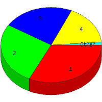

Week of 8/23/2009 to 8/29/2009: Top
5 of
5 File Types (Extensions)
Sorted by Access Count
Individual file types as determined by file extensions. All URLs that
do not contain an extension are counted as directories.

| Rank |
Type |
Accesses |
% |
Bytes |
% |
| 1 |
jpg
|
57 |
32.39 |
2,417,885 |
77.00 |
| 2 |
htm
|
47 |
26.70 |
170,814 |
5.44 |
| 3 |
Directory (folder)
|
40 |
22.73 |
97,125 |
3.09 |
| 4 |
gif
|
30 |
17.05 |
453,640 |
14.45 |
| 5 |
css
|
2 |
1.14 |
520 |
0.02 |